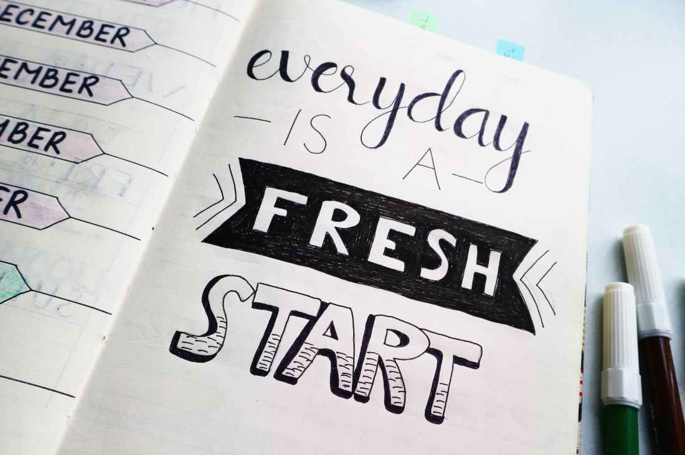

What if you could manufacture a perfect day? One of those ah-so-amazing days when you have the “productive touch” and everything seems amazing.
The morning routine sets the tone of your day. No matter how shitty yesterday was or how much you have to do today, the morning routine is your daily constant— your totally 100% selfish ritual. It keeps you sane. It’s the time that makes or breaks your day.
If you study successful people, one thing that you’ll notice really quickly is that they share a bunch of similar habits— and the daily ritual is one of them.
If you study successful people, one thing that you’ll notice really quickly is that they share a bunch of similar habits— and the daily ritual is one of them.
1.WAKE UP BETWEEN 5-6AM
I’m a morning person and I don’t even set an alarm to wake up. (My friends have always wondered how I do this!!!!)Getting up early gives you a kick start for the day ahead. Besides allowing you more hours for your work, it also boosts your speed. Studies have suggested that when a person gets up early, he is more energetic and takes lesser time to do a task that would take more time otherwise. He is also more adept in taking better decisions, planning and achieving goals.
2.MAKE YOUR BED IMMEDIATELY
I started making my bed every day—and it makes all the difference for my mornings and for my night.
Why is making your bed every morning so important? US Admiral William H. McCraven, who spent 36 years as a Navy SEAL and was required to keep his room spic and span during his service, says in his 2014 commencement speech at the University of Texas that it’s extremely motivating for the day ahead:
“If you make your bed every morning, you will have accomplished the first task of the day. It will give you a small sense of pride, and it will encourage you to do another task, and another, and another. And by the end of the day that one task completed will have turned into many tasks completed.”
3.AVOID PHONE DISTRACTIONS
Avoiding social media in the morning is something I’ve been working hard to commit to. If I look at my whatsapp as soon as I get out of bed, I will go into panic mode and only be able to think about what I need to respond to. If I check Instagram, I’ll get stuck there for at least 30 minutes and totally lose track of time. I instead started going for Yoga classes which suddenly made my mornings a whole lot better!
4.START WITH GRATITUDE
Another thing you can do to makeover your morning routine is to practice gratitude.I have this stone that I call “THE GRATITUDE STONE” that my friend gave to me a few years back. I am so grateful for her and for the stone that helps me start my day on a positive note. I simply hold the stone and think of 3 things that I’m grateful about. I know it sounds stupid but trust me it’s helped me cope with stress and negative thoughts. I just feel a lot happier and satisfied. We all have the ability and opportunity to cultivate gratitude. Simply take a few moments to focus on all that you have – rather than complain about all the things you think you deserve.
5.REVIEW YOUR PLANS
One thing I like to do in the morning is to review my to-do list for the day, as well as look at my monthly and yearly goals. Like most people, my memory is terrible when I wake up, and I often don’t even know what day it is. Taking the time to actually review my goals encourages me to stay focused on the big picture and help me remember what I’m working towards.